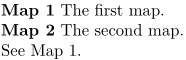

Syntax (autogenerated)
Syntax
| \labeling[ref] | |
| [ref] | |
Description
Place a numbered label that was defined with \definelabel. This command is not actually called \labeling; the labeling part is merely a placeholder. The example should make things clear.
Example
-
\definelabel[map][text=Map, location=inmargin] \map[smallmap] The first map. \map[bigmap] The second map. See \in{Map}[smallmap].
- 
See also
- \definelabel
- \enumeration for a newer mechanism that can replace many uses of \labeling
Help from ConTeXt-Mailinglist/Forum
All issues with: